最近看到三上老师在个人油管分享了自己的从业经历，深有感触，想起曾经某位老司机分享的三上老师的逆袭之路想分享给大家，本人的不成熟想法虽然在我们的传统观念中成人影片难以启齿，从业人员收到我们文化的鄙视，但是在日本成人产业从他们的文化中就存在，并且广袤的历史中那些成人产业工作的女优为日本贡献良多，没一个国家有自己的文化和传承，成人文化是日本这个国家的历史遗留，抛开文化偏见很多日本的女优有这自己的不得已和值得我们尊敬的闪光点，跳出看见女优就想象她们没穿衣服的龌龊思想他们的人格魅力和工作态度值得肯定，毕竟国内一些演员的演技可能还不如人家的女优，今天我就转载我曾经看到的某篇文章（出处就不注明了 手动狗头）希望大家对这个职业的看法有所改变。
三上老师的亲口讲述
相信大家就算不追星，或许应该都听过这样一句话吧：“偶像谈恋爱就要被杀头” 。“私联粉丝就是偶像失格”。对于大部分爱豆来说，似乎触犯了这两项“禁忌”，基本就永无翻身之日了。可是有位神奇的女爱豆她谈恋爱私联还曝出了绯闻，却也没影响人气，哪怕下海做了“AV女优”居然也还能继续追逐自己的演艺事业。她就是大名鼎鼎的三上悠亚，下文我们将亲切称呼她为三姐。
其实男同胞们会对“三上悠亚”这个名字比较熟悉毕竟三姐曾几何时也是“日本顶级女优”在许多男同胞们蒙尘的网盘里，应该都有她带来的启蒙之光…
不过，如果我们仔细考古三姐异彩纷呈的前半生虽然做顶级女优的日子最让她名利双收，但是与这相比，三姐即便下海也要实现做“女团爱豆”的梦想才是堪称“小说都不敢写的剧情”！在故事的一开始，在成为“三上悠亚”之前三姐只是个长相平平的少女，那时候她的名字也不太fashion，叫“鬼头桃菜” 。
平心而论，13岁时候的三姐，外观整体上有不少硬伤，龅牙、皮肤黝黑、身材瘦瘦小小，显而易见，那个时候的三姐距离“人气偶像”这四个字可以说是隔着一道巨大的鸿沟。但不得不说，三姐的确有决心，有毅力，年纪轻轻的她，下定决心要从自己的硬件条件做出改变。先开始换头，15岁，她开始整牙。
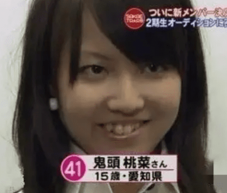
16岁，龅牙调整的不错，虽然整体牙齿还是不太整齐，但反而很有俏皮的少女味。此外，皮肤也变白了，两边的腮帮子狠狠往里收，慢慢有了鹅蛋脸的轮廓。
恰好在这一年，三姐靠着SKE48（名古屋市）追加成员的机会，成功进入了48体系，成了SKE48 -Team S的一员。拿到了跨入爱豆门槛的入场券，在这里，我也简单给大家普及一下48系，我们国内的SNH48其实就是copy了，日本的AKB48这个团，虽然名字叫AKB48，但其实，这里面可不是仅仅只有48人。因为除了AKB48外，还有衍生的SKE48、NMB48、HKT48、JKT48…这些组合统称为48系。而桃菜加入的不过就是衍生的SKE48团罢了。
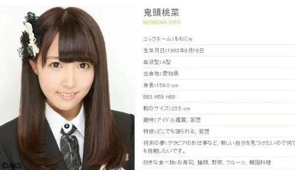
在那个时候论实力、拼努力、比容貌…三姐在美女如云的48系里并不出挑。毕竟，她身边有数不清的青春美少女，所以三姐要想从团内脱颖而出，真的难如登天。所以在很长一段时间内，进了SKE48的三姐，在圈里也是查无此人的小糊糊。
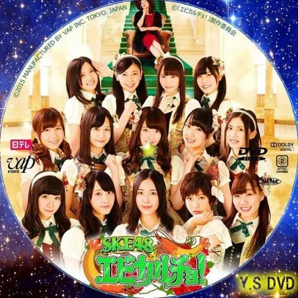
不过，一心想做人气爱豆的三姐怎么可能就这么让自己一直糊下去呢？于是她继续换头随着时间的推移，在不断的调整中挨了刀、吃了苦的三姐的确得到了收获。她慢慢变成了精致小美女。
和一开始的原生脸相比也算有点“脱胎换骨”内味了，对吧？

好不容易变漂亮之后三姐的知名度也得到了一些提升，可是好巧不巧，就在这个时候，她被接连曝出绯闻了！2010年，三姐被曝出和粉丝私自约会，讲真，“少女偶像私联粉丝”在日本偶像圈可是行业大忌！一旦犯了，就容易直接“被迫退圈”。但三姐犯的错居然还不止这些，2013年三姐被前男友恶意曝出巨多私照，各种大尺度照片让身为少女偶像的她，彻底人设崩塌。
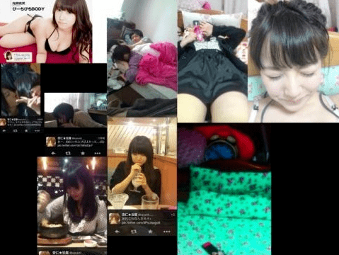
然后没过几天，三姐又被日媒拍到和男明星的kiss照彻底激怒了粉丝。私联、私照、和男明星拥吻。三姐算是把少女偶像不该踩的雷，稳稳的全踩了一遍。所以她的偶像生涯，也顺理成章的被毁掉了。2014年，三姐被SKE48开除，因此也逐渐淡出了人们的视野。但是！隐退的三姐难道放弃了吗？怎么可能！既然不能在舞台上做少男少女的“偶像”。那改头换面做暗黑界的“少女偶像”，似乎也不是不可以。22岁，三姐很快宣布重出江湖。这一次，她要以女优“三上悠亚”的身份逐梦日本暗黑界！
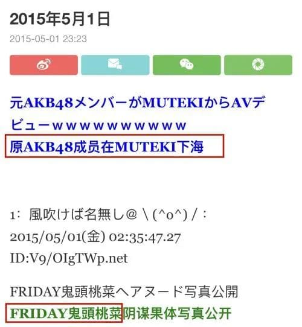
从2015开始三上悠亚就成了许多宅男心目中的女神。
毕竟，三姐有前凸后翘的身材。
三姐有愈发精致可爱的脸蛋。
你看！又欲又纯吧？完完全全戳中所有直男的幻想啊！
此外，三姐还有精湛的演技三姐要啥有啥，所以三姐怎么可能不火呢？
之前听说过日本av男优流汗卖力，但工资少的故事。不过相对来说，虽然女优工资赚的多，但也很累。作为主角通常既要演戏，又要完成不同情趣类型的要求，每天的拍摄任务非常重，不过这些问题，咱们三姐都扛下来了。而且她还凭着敬业的态度和出色的演技，在暗黑界闯出了一片天。甚至达到了她过去偶像生涯里也从未有过的热度。
后面，三姐甚至还荣获了日本暗黑界的奥斯卡：DMM成人大赏最优秀女优奖。在三姐风风火火闯荡AV界的那两年里，她不仅摆脱了身败名裂的窘境，还靠着女优的工作成了当之无愧的“富婆”。反正，日常各种奢侈品傍身是小case，三姐还在东京最繁华的区域接连买下好几套大公寓。
到这里，咱们三姐的人生可以说是完全实现了“逆袭”。落魄小糊豆一个翻身，就成了有钱有名气的顶级女优，名利双收，啥都有了。可是，堪称“人生赢家”的三姐还是不满足，因为她心里那个熊熊燃烧的“爱豆梦”，仍然在无数个夜里呻吟着、呼唤着。所以三姐开始经营自己的“上岸计划”了，没错，哪怕是下海她心里念念叨叨的还是展在舞台上做少女偶像的那个自己！
于是，三姐先是加入了日本女团“惠比寿麝香葡萄”。这是一个有着“成人版AKB48”之称的日本女子团体。为什么说是成人版呢？因为这个团里所有的成员都是曾经“下过海”心怀女团梦的人。
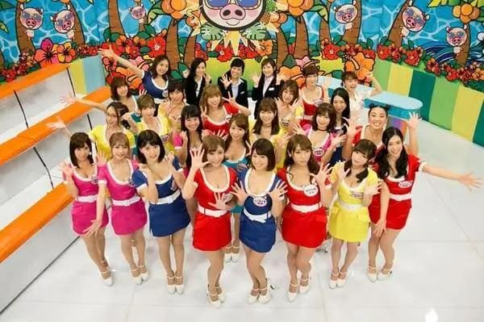
在“惠比寿麝香葡萄”的日子里，三姐也很争气证明了自己能做爱豆的“实力”。从表现来看，长相甜美、业务过关的三姐的确很不错，不过，在日本活动了一两年后，三姐觉得日本偶像舞台太小了，于是她把目光投向了女团市场最成熟的韩国。2018年，有钱任性的三姐自费在韩国出道了！作为女团Honey Popcorn的绝对C位。她在韩国开启了真*女爱豆生涯。
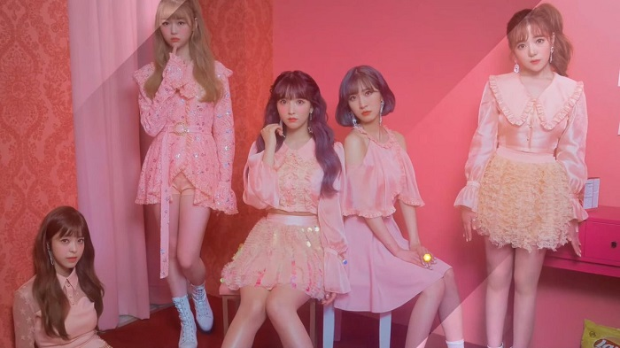
一开始的时候刚听说三姐出道的消息，几乎所有人都在唱衰。“哈？女优也能上岸？”“都下海了为什么还要穿回衣服？”
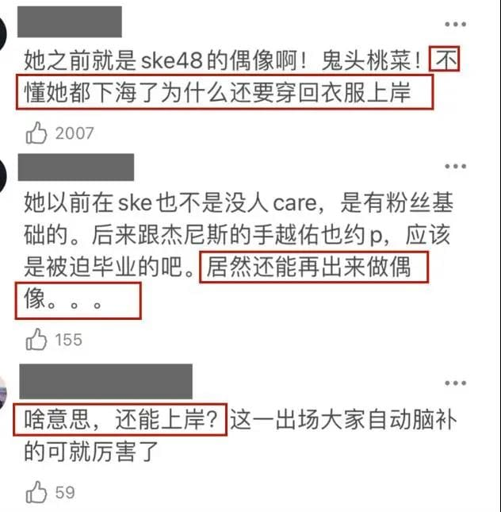
在这些质疑声不绝于耳的时候，三姐非常淡定，不为所动，一直都在努力提高自己的业务能力，然后很快，三姐就用舞台啪啪打了那些抨击者的脸。
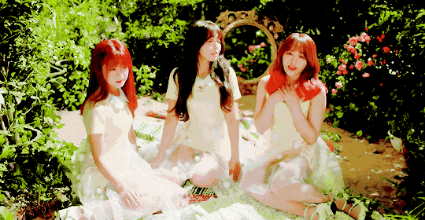
平心而论，三姐的舞蹈张力的确过关跳舞时的表情管理也一直在线。
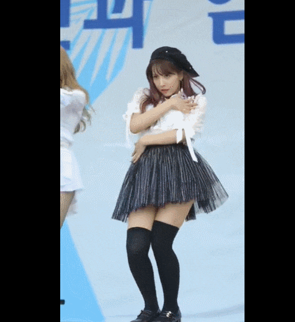
关键是还非常元气一颦一笑都可可爱爱的。

而且，无论是清纯少女风。
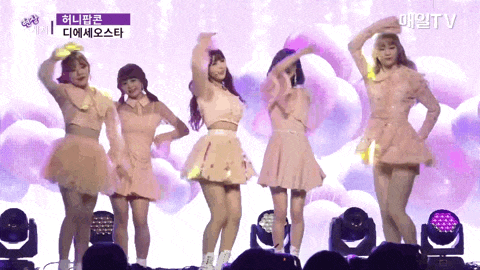
还是日式可爱风。
或者妖娆性感风。
咱们三姐的确都hold住了！不管在哪个圈子里，实力都是最有力的证明。所以做到让人“无可指摘”程度上的三姐，的确把曾经那些不看好她的媒体和观众都“征服”了。
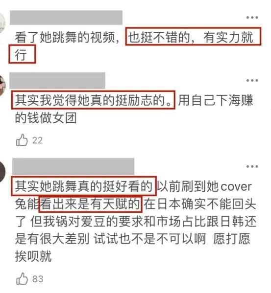
但是，成功成为“少女爱豆”的三姐实现了梦想她就因此止步了吗？没有！三姐不仅仅把自己的职业规划放在做“偶像”这一件事上。2020年，她还开办了自己的服装品牌。
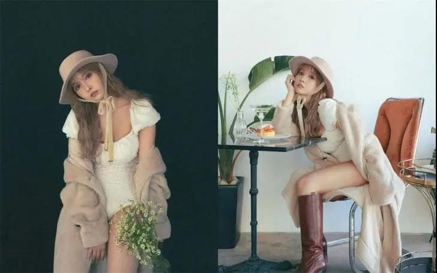
反正现在看来如果三姐哪天唱累了、跳累了，不做做女团了，富婆三姐也可以想干啥干啥。毕竟有钱人的生活就是那么枯燥乏味。每天不重样的奢侈品包包。

日常fendi级别的下午茶。
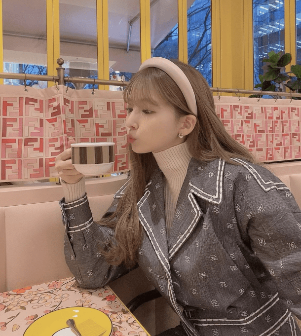
时不时出门度假消遣。
从长相平平的少女鬼头桃菜到进女团被开除、下海做女优，上岸再做爱豆女老板。前半生轰轰烈烈的三姐的确实现了“逆袭”二字。可是最最最让人羡慕嫉妒恨的是！折腾了这么这么这么一大圈今年的三姐，也不过才28岁而已。
曾经，三姐因为绯闻几乎身败名裂，但今天，她的名气已经足以让她摆脱平常小爱豆的身份，不会再因为绯闻而影响到事业。我们来总结一下神奇女子“三姐”的前半生军功章：她不仅打破了偶像圈“谈恋爱要砍头”的死亡铁律，也成了走出48体系后越来越红的第一人。尽管，那段下海的经历对于大多数人来说算不上光彩，但姐在所有人不看好的情况下，依然坚定追梦的信念感真的也挺酷的。
尽管，现在重新站在舞台上的三姐也难免因为“下海经历”而被人“嫌弃”。但也有很多人支持和pick三姐，这里面有被三姐的实力和努力吸引的粉丝，也有被三姐锲而不舍做女团的梦想所打动的路人，说到这里我也不得不感叹一句“有梦想谁都了不起”！ 所以，屏幕前的各位如果你也在追梦的路上迷茫了，不妨和咱们三姐一样再坚持一下。正所谓，念念不忘必有回响。今天的文章，就来致敬所有的追梦人！
最后还是希望大家不要对女优这个职业抱有某种歧视，我看到过很多国人在她们的社交账号下的下流言论，每个人有自己的故事和选择，在她们的社会环境和个人经历的影响下她们选择了这条路，大家不要看光了人家还要用粗鄙下流的言论去侮辱人，而且在她们推特脸书等社交账号下的来自中国的下流留言实在是在全世界面前丢了中国人的脸，我知道有人会说别的国家也有，但是请不把我们有这五千年悠久文化的中国和一堆未开化的野人比较。